目次
●使い方
◎LDC
◎LSIM
◎LSIM
View
○操作
◇小窓
○ファイル出力
○色設定
○選択拡大
|
使い方
L言語で設計するための LTOOL の各プログラムの使い方の説明です。 
LDC
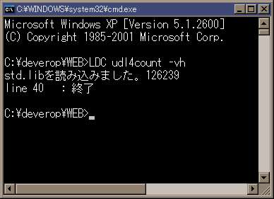
- LDC は L言語 で書かれた論理譜に最適化と論理圧縮を行って積和型の論理に展開するコンパイラです。
- LDC
だけで実行したときは選択機能が羅列されます。
- LDC を実行するときは同梱された STD.LIB を同一のディレクトリに置いて実行してください。
- STD.LIB はユーザで論理を追加してあっても構いません。
- 論理譜のファイル名だけを指定して実行したときはファイルの出力はなくエラーの有無だけを確認できます。
- ファイル名の拡張子を省略したときは .L が付きます。
- オプションはファイル名の後に付けます。
- LDC
にファイルの出力をさせるのはチップ化するときと検証のファイルを得るときです。
チップ化する場合には使用する言語に応じて下の4種類のオプションがあります。
【言語】
| 言語 |
オプション |
論理ファイル |
テストベンチ |
| ABEL |
-ab |
e□.abl |
e□.abv |
| AHDL |
-ah |
e□.tdf |
|
| VHDL |
-vh |
e□.vhd |
s□.vhd |
| Verilog |
-vr |
e□.v |
s□.v |
| LSIM |
-ls |
e□.sim |
t□.sim |
□ は entity の順番で 0 から振られます。
論理譜に機能実行譜があるときはテストベンチも出力されます。
- テストベンチのステップ数は無指定なら 30 ステップです。 -sp 数 でステップ数を指定できます。
- 論理譜に機能実行譜があるときは同一ディレクトリに LSIM .LBL
がなければ出力します。
-lbl を付けると LSIM .LBL を更新します。
- STD.LIB にユーザの論理を追加することができます。 -lib は手続き譜を STD.LIB
に追加した NEW.LIB を出力します。
- 論理が大きかったり、信号数が多いときは最適化や論理圧縮に時間がかかります。そのときは -opt 0 -qm
0 のオプションを付けてください。
1番目が最適化を2番目が論理圧縮を無効にするオプションです。これを指定すると最適化を最小限度に留めて、論理圧縮はまったく行いません。
LDCのコンパイル出力は多少は大きくなりますが論理的に違いはありませんので時間が気になる場合はこうしてください。
- 強制終了させたい場合は Ctrl-C を押してください。
LSIM
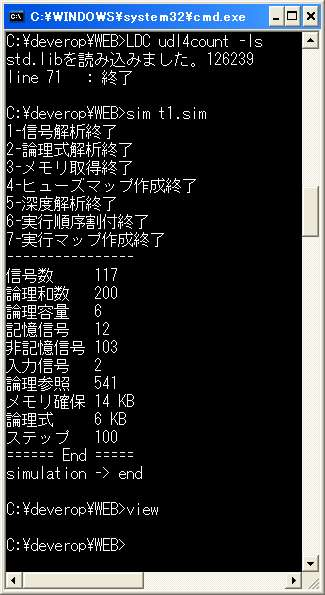
LSIM は LDC に -ls を付けて出力されたファイルを処理してステップ数に応じたシミュレーション値を LSIM
.OUT に出力します。
LSIM はシミュレーションデータを作るだけのプログラムで閲覧は LSIM View で行います。
- LSIM の実行プログラムは SIM.EXE です。
- ファイル名の拡張子は省略できません。
- LSIM のオプションはひとつだけでファイル名の次にステップ数を指定できます。
指定しないときは 100
ステップになります。
500 ステップにしたいときは SIM s1.sim 500 とします。
- 深度解析が失敗したときは非記憶信号だけの論理に、その出力が入力に返されて非同期記憶になっています。実効譜か機能実行譜を見直してください。
bitn a;
a=a+1;
|
|
非記憶の信号で左の様に書くと深度解析が失敗します。 |
- シミュレーションが正常に終了している場合は
simulation ->
end まで表示して実行を終了しています。
- 強制終了させたい場合は Ctrl-C を押してください。
LSIM View
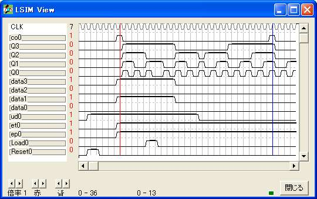
上記の画面は PDF と EPS でファイルに出力することができます。
LSIM View は LSIM .OUT を閲覧するプログラムです、実行プログラムは VIEW.EXE です。
操作
- LSIM View は同一ディレクトリにある LSIM.OUT
を読み込んで起動するのでファイル名を指定したり、起動後に閲覧ファイルを選択したりすることはありません。
- LSIM View が起動すると上の画面のように直ちに閲覧できる状態になっています。
- 縦と横のスクロールバーを使って目的のステップ位置に移動して値を確認してください。
- 画面の左下で画面の倍率が1から5までの5段階で変えられます。
2桁以上の信号の波形画面での値の表示は2倍からです。
- カーソルは赤と青の二本が使えます。
信号画面と波形画面との間にカーソルの位置する信号の値が表示されます。
小窓
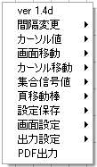 LSIM View の波形画面を右クリックしたときに現れる小窓です。 |
|
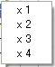
間隔変更 は信号画面と波形画面との間を5段階で広げます。
|
|
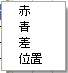 カーソル値
は信号画面と波形画面との間に表示する値を決めます。
赤をクリックしたときはそのときの赤のカーソル値を表示します。
青をクリックしたときはそのときの青のカーソル値を表示します。
|
|
差 をクリックしたときは、それ以降のカーソル操作で
赤 - 青
の値を表示します。
位置
をクリックしたときは、それ以降の赤または青のカーソル操作が行われた位置を表示します。 |
|
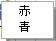
画面移動
はカーソル位置を波形画面の左端に位置して画面を移動します。
赤
カーソルに赤を選んで移動します。
青 カーソルに青を選んで移動します。
|
|
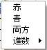
カーソル移動
は画面の外にあるカーソルを画面に呼び戻します。
赤
をクリックすると赤カーソルを画面に呼び戻します。
青
をクリックすると青カーソルを画面に呼び戻します。
両方
をクリックすると両方のカーソルを画面に呼び戻します。
|
|
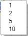
進数
カーソルの左右の移動をクリックしたときの移動数を決めます。
|
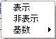
集合信号値
波形画面に信号値を表示するか、しないかと、2桁以上の信号値を表示するときの基数を決めます。 |
|
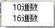
基数
集合信号値の基数を決めます。
10進数
基数を10にします。
16進数
基数を16にします。 |
|
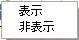
ページ移動棒
波形画面が2頁以上あるときに横スクロールバーが波形画面の上に表示されます。これの表示、非表示を決めます。
表示
ページ移動棒を表示します。
非表示 ページ移動棒を表示しません。
|
|
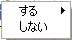
設定保存
LSIM View
の色設定以外の設定値を保存するかどうかを決めます。
保存された設定値は LSIM View
が次に起動するときの初期値になります。
する
現在のLSIM View
の設定値を保存します。
しない
設定値は保存しません。
|
ファイル出力
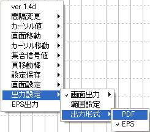
LSIM View は画面をファイルに保存することができます。ファイル形式は PDF と EPS
です。どちらのファイル形式が選択されているかは小窓の最下段に表示されています。
PDF出力 あるいは EPS出力
をクリックするとファイルを保存するダイアログが開くのでファイル名を指定して保存します。 ファイル形式を変更するには 出力設定 から
出力形式 をポイントして PDF と EPS のどちらかの望む形式をクリックしてください。
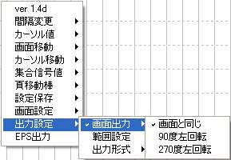
ファイル形式にEPSを選択した場合は画面を回転させて保存することができます。保存画面の回転位置を変更するには 出力設定 から
画面出力 をポイントして 画面と同じ か 90度左回転 か 270度左回転
から望むものをクリックしてください。
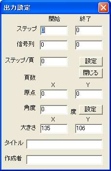
パソコンの画面より大きい範囲を出力したいとき、あるいは 2 頁以上の出力を行いときは 出力設定 から 範囲設定
をクリックすると左のダイアログが開きますので、必要な項目を記入後に設定ボタンを押してください。なお、 原点 ・ 角度 ・
大きさ は出力形式にEPSを選択したときにだけ記入できる項目です。
タイトル は Adobe Reader でも
GSview でもファイル情報に表示されますが 英文字 でないと正しく表示されません。
作成者 は Adobe Reader
ではファイル情報に表示されます、これも 英文字 で記入してください。
色設定
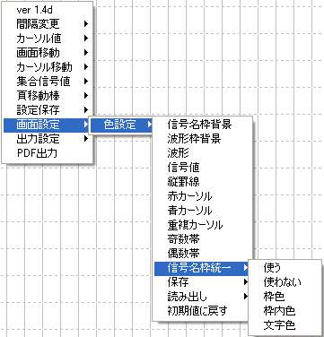
- LSIM View
の画面はユーザが自由に設定できるようになっています。それはPDFとEPSで保存するファイルにも適用されます。 画面設定 から
色設定
をポイントして色変更したい項目を選んでクリックすると「色の設定」のダイアログが開きますので望む色を選んで設定してください。
- 信号枠の個々の信号名の色設定は LSIM .LBL で行っていますが、信号名に一律に同じ色設定を LSIM .LBL
とは別に行うのが 信号名枠統一 です。 使う をクリックして適用され 使わない
をクリックして外されます。 枠色, 枠内色, 文字色 は一律にする色の指定です。
- 色設定は 保存 で8個まで登録することができます。
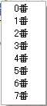
読み出し で8個の内のひとつを現在画面に適用します。
LSIM View の起動時には 0番
を登録しているときは 0番 の設定を読み出して画面に適用します。 0番 の登録がないときは 初期値 を適用します、信号名の色は LSIM
.LBL から適用します。
- 色設定を初期値に戻すには 初期値に戻す をクリックしてください。 信号名の色は LSIM .LBL
から適用します。
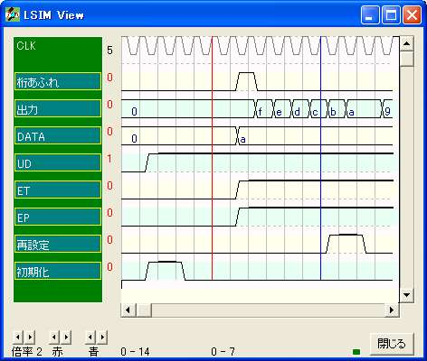
左は色設定を変更して 信号名枠統一 を適用した例です。
PDF
選択拡大
矢印カーソルで画面の一部を選択して拡大した画面で表示させることができます。 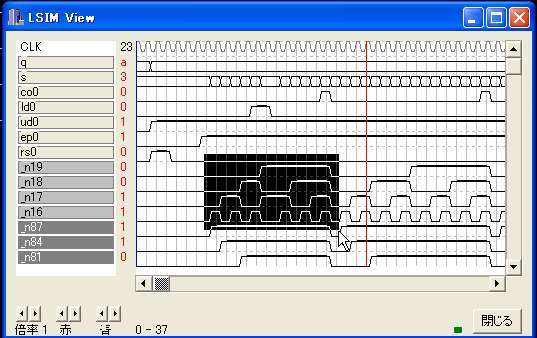
↓ 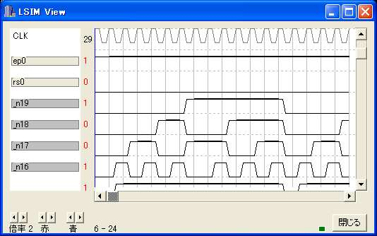
|